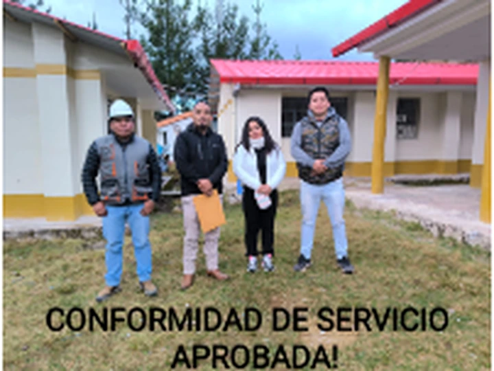
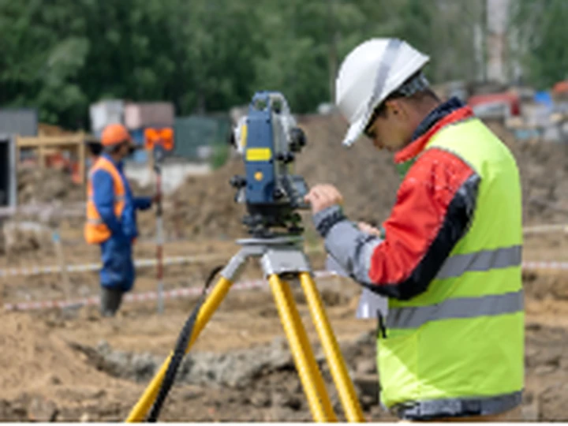

SOLUCIONES EN INFRAESTRUCTURA PARA EL SECTOR PÚBLICO
Ejecución de obras, servicios, suministro de bienes y consultoría técnica para proyectos públicos y privados.
Construimos progreso, desarrollamos futuro.
¿Quiénes somos?
FLORES | Ingeniería y Construcción es una empresa peruana habilitada en el Registro Nacional de Proveedores (RNP) para contratar con el Estado en ejecución de obras, prestación de servicios y provisión de bienes. Contamos con experiencia en contrataciones públicas, principalmente en proyectos de infraestructura, mantenimiento y servicios especializados, destacando por nuestro compromiso con la calidad, eficiencia y responsabilidad en cada proyecto.
Nuestros servicios
Cuatro líneas de actividad para proyectos y requerimientos públicos. Selecciona una tarjeta para conocer nuestros servicios y procesos.

Ejecución de obras
Desarrollo de proyectos de infraestructura pública, con soluciones técnicas adaptadas a cada intervención.
Ver servicios y forma de trabajo →
Prestación de servicios
Mantenimiento preventivo y correctivo de infraestructura, instalaciones y espacios de uso público.
Ver servicios y forma de trabajo →Provisión de bienes
Suministro de bienes según las especificaciones y condiciones establecidas por cada entidad.
Ver servicios y forma de trabajo →
Consultoría de obras
Estudios, expedientes técnicos y supervisión de obras, según el alcance de cada proyecto y las habilitaciones aplicables.
Ver servicios y forma de trabajo →Fotografías recuperadas de la página de FLORES. Las imágenes son referenciales a las áreas de servicio; no constituyen fichas de contratos.
Áreas de especialización
Soluciones orientadas a las necesidades de infraestructura y abastecimiento de entidades públicas.
Saneamiento y sistemas sanitarios
Infraestructura vial
Edificaciones e infraestructura pública
Mantenimiento de infraestructura
Sistemas de riego
Suministro de bienes
Estudios y expedientes técnicos
Explora cada especialidad para conocer nuestros alcances y procesos de atención.
Conversemos sobre tu próximo requerimiento
Atendemos consultas comerciales sobre ejecución de obras, servicios, bienes y consultoría de obras.
Escribir por WhatsAppRazón social: MIGORESLAV CONSTRUCTION S.A.C.
RUC: 20610778942